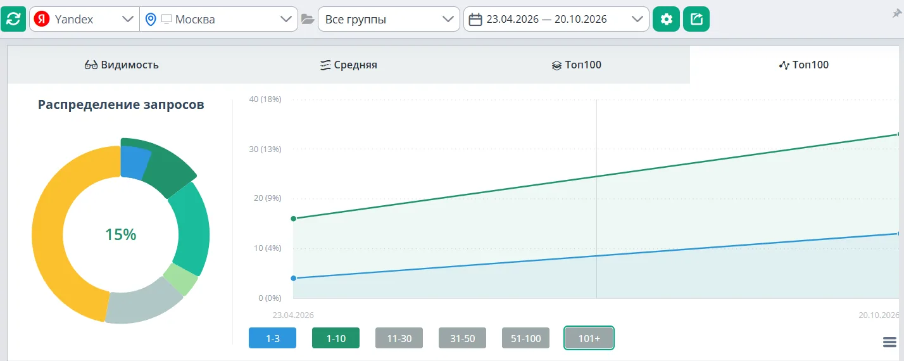
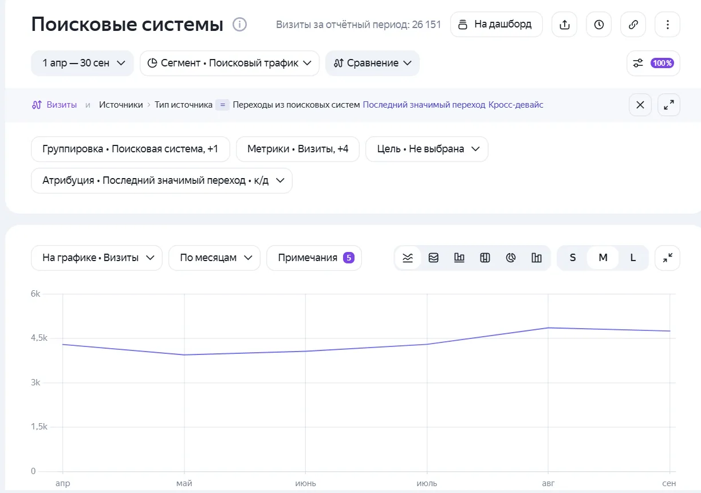
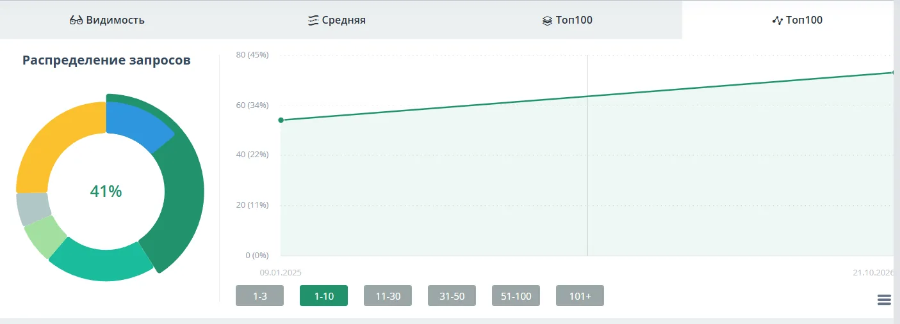
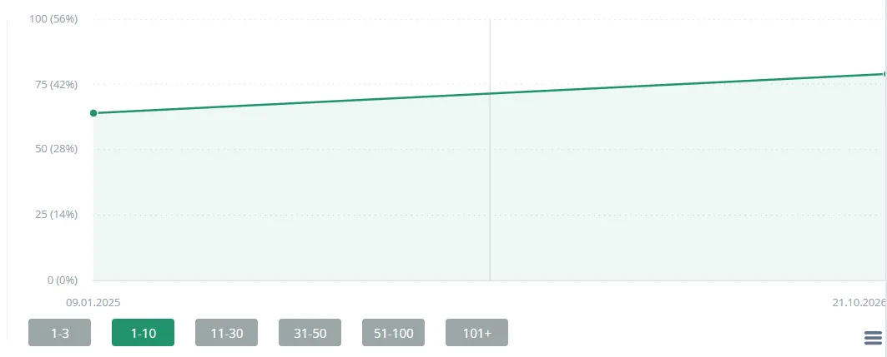

Результаты SEO со скриншотами
в 15 раз
Типография, Краснодар
Сайт на самописном движке почти не показывался в поиске. Число запросов в топ-10 Яндекса выросло с 3 до 45 из 101, в топ-3 с 3 до 31. В Google в топ-10 было 5, стало 18.
Что делала
- Техническая чистка сайта: ответы сервера, дубли, служебные страницы
- Удалила страницы, которые конкурировали друг с другом за одни запросы
- Сняла переоптимизацию текстов
- Каждый месяц новые страницы под спрос из семантики
- Коммерческие блоки и FAQ на ключевых страницах


вдвое
Клиника ЭКО, Москва
Приняла проект от другого подрядчика на фоне многолетнего падения трафика. За полгода падение остановилось, запросов в топ-10 Яндекса стало 33 вместо 16 из 225, в топ-3 13 вместо 4.
Что делала
- Сняла переоптимизацию страниц
- Закрыла дубли страниц
- Выстроила иерархию заголовков
- Исправила технические ошибки
- Добавила коммерческие факторы и медицинские блоки доверия: врачи, лицензии, цены, юридические оговорки




+60%
Завод деталей турбин, Уфа
Проект с лета 2026. Визиты из поиска выросли с 432 в июле до 691 в сентябре, а запрос "ремонт лопаток турбины" поднялся с 17 места на 1.
Что делала
- Исправила технические ошибки
- Улучшила удобство сайта
- Внедрила коммерческие факторы

+35%
Детский образовательный центр, Москва
Расширила охват новыми страницами под лагеря, робототехнику и мастер-классы: в топ-10 Яндекса 73 запроса вместо 54 из 178, в Google 79 вместо 64.
Что делала
- Новые страницы под спрос с метатегами и SEO-текстом
- Контентные блоки и метатеги на существующих страницах
- Уникальные FAQ



